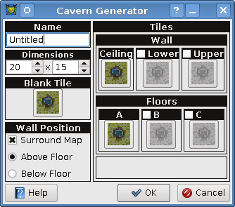

[User Interfaces]->[Random Map Generator]->[Cavern Generator]

- Name
- The name for the generated map.
- Dimensions
- The width and height of the generated map.
- Blank Tile
- The tile used to fill in the hero layer and upper layer (should be filled with the transparent color magenta).
- Wall Position
- Choose whether to surround the map with wall tiles and select whether or not the walls are to be placed above or below the floor tiles.
- Tiles
- The individual tiles are self explanatory as to what they are. To change one simply click on the button
and select the tileset and tile from the popop window.